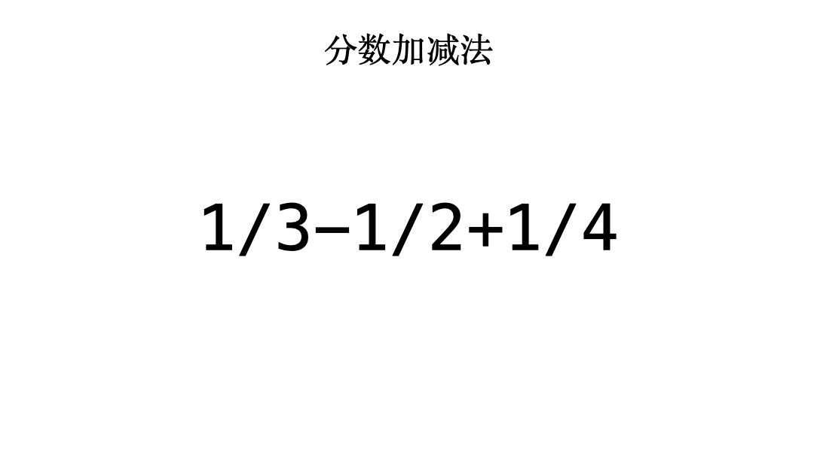

Audio春节刷题计划（四）丨一题三解，搞定分式加减法
你好，我是朱涛。今天是初四了，在过年的节日氛围里你还能来坚持学习，这里也跟优秀的你说声感谢。
这其实也是一道典型的模拟题，分式的加减法这样的题目，我们小学就知道怎么做了，核心解题思路主要是这几步：
第一步，求出分母的最小公倍数。比如，2 和 3 的最小公倍数就是 6。
第二步，根据计算出来的最小公倍数，将分数进行通分。举个例子：“1/2-1/6”，如果把它们两个通分，就会变成“3/6-1/6”。
第三步，将分子进行加减法，计算出分子的结果。比如，“3/6-1/6”计算过后，就会变成“2/6”。
最后一步，将计算结果转换成“最简分数”，比如“2/6”化成最简分数以后，应该是“1/3”。
经过这四个步骤，我们就可以计算出“1/2-1/6=1/3”。不过呢，这道题里，我们除了要计算分数的加减法以外，还要先完成分数的解析。程序的输入是字符串“1/2-1/6”，但它是不会帮我们自动解析的，所以，解析这一步也需要我们来做。
所以，自然而然地，我们就会定义一个分数的数据类 Expression。
data class Expression(val numerator: Int, val denominator: Int) {
override fun toString(): String {
return "$numerator/$denominator"
}
}在这个数据类 Expression 当中，一共有两个属性，numerator 代表了分子，denominator 代表了分母，它们的类型都是 Int。另外，分数都是带有符号的，这里我们按照约定俗成来处理：分子可能是正数或负数，分母则一定是正整数。比如“1/2”，我们就用 Expression(1,2) 来表示；而“-1/2”，我们就用 Expression(-1,2) 来表示，而不会使用 Expression(1,-2) 表示。
另外在正式开始做题之前，还有一些额外的条件是需要我们弄清楚的：
第一，只需要支持分数的加减法，乘除法不需要考虑；
第二，输入的式子中间不会有空格，且式子也一定是正确的，这就意味着，我们的输入只会包含“0-9”、“/”，“+”、“-”这些字符，不会出现其他的字符；
第三，整数也会用分数来表示，比如说“2”，会用“2/1”来表示；
第四，计算结果保证不会整型溢出。
好，问题的细节我们弄清楚了，大致思路也有了，接下来，我们就用三种解法来搞定这道题。
解法一：命令式
命令式的代码是最符合编程直觉的，我们的思路大致如下：
第一步，将式子当中的“-”统一替换成“+-”，然后再用split("+")将式子分割成一个个独立分数。这种技巧我们在上节课就已经用过了。
第二步，解析出独立的分数以后，我们就要将每一个分数解析成对应的 Expression 了。这里具体做法也很简单，我们可以用“/”来分割分数，前面的就是分子，后面的就是分母。比如“-1/2”，我们就可以解析出 Expression(-1,2)。
第三步，就是根据解析出来的所有分母，计算出所有分母的最小公倍数。比如，“1/2+1/3+1/4”，我们就把分母都提取出来“2，3，4”，而它们的最小公倍数应该是 12。
第四步，就是将所有的分数都通分。比如“1/2+1/3+1/4”，就会变成“6/12+4/12+3/12”。
后面的步骤就简单了，我们只需要将分子都相加起来，确保结果是“最简分数”即可。
整个过程如下图：

所以，我们就可以把代码分为以下几个步骤：
fun fractionAddition(expression: String): String {
// ①，分割式子
// ②，解析分数成Expression
// ③，计算所有分母的最小公倍数
// ④，将所有的分数都通分
// ⑤，将所有分子加起来进行计算，得到结果
// ⑥，将结果化为“最简分数”
// ⑦，最后，返回toString()的结果
}把编码步骤梳理清楚了以后，其实我们每一个步骤都不难实现了：
fun fractionAddition(expression: String): String {
// ①，分割式子
val list = expression.replace("-", "+-")
val fractionList = list.split("+")
val expressionList = mutableListOf<Expression>()
// ②，解析分数成Expression
for (item in fractionList) {
if (item.trim() != "") {
expressionList.add(parseExpression(item))
}
}
// ③，计算所有分母的最小公倍数
var lcm = 1
for (exp in expressionList) {
lcm = lcm(lcm, exp.denominator)
}
// ④，将所有的分数都通分
val commonDenominatorFractions = mutableListOf<Expression>()
for (exp in expressionList) {
commonDenominatorFractions.add(toCommonDenominatorExp(exp, lcm))
}
// ⑤，将所有分子加起来进行计算，得到结果
var numerator = 0
for (fraction in commonDenominatorFractions) {
numerator += fraction.numerator
}
// ⑥，将结果化为“最简分数”
val result = Expression(numerator, lcm)
val reducedFraction = result.reducedFraction()
// ⑦，最后，返回toString()的结果
return reducedFraction.toString()
}在上面的代码当中，还涉及到几个辅助函数，它们的实现也很简单。
// 解析分数，“1/2” -> Expression(1,2)
private fun parseExpression(expression: String): Expression {
val list = expression.trim().split("/")
if (list.size != 2) {
throw IllegalArgumentException()
}
return Expression(list[0].toInt(), list[1].toInt())
}
// 通分
private fun toCommonDenominatorExp(expression: Expression, lcm: Int): Expression {
return Expression(
numerator = expression.numerator * lcm / expression.denominator,
denominator = lcm
)
}
// 最简化分数
private fun Expression.reducedFraction(): Expression {
val gcd = gcd(Math.abs(numerator), denominator)
return Expression(numerator / gcd, denominator / gcd)
}
// 求两个数的最小公倍数，Least Common Multiple
private fun lcm(a: Int, b: Int) = a * b / gcd(a, b)
// 求两个数的最大公约数，Greatest Common Divisor
private fun gcd(a: Int, b: Int): Int {
var (big, small) = if (a > b) a to b else b to a
while (small != 0) {
val temp = small
small = big % small
big = temp
}
return big
}这几个辅助函数，需要注意的是 reducedFraction()，它的作用是计算最简分数，计算过程，其实就是计算出分子、分母的最大公约数，然后同时除以最大公约数。而最大公约数 gcd() 这个方法，本质上就是我们小学学过的辗转相除法。而最小公倍数 lcm() 这个方法，则是通过两数相乘，然后除以最大公约数求出来的。
至此，我们的第一种解法就完成了。
解法二：函数式
其实，利用同样的思想，我们还可以写出函数式的解法。如果你足够细心的话，你会发现解法一的代码可读性并不是很好，而如果用函数式思想重构上面的代码的话，可读性将会得到很大改善。
fun fractionAddition(expression: String): String {
var lcm: Int
return expression
.replace("-", "+-")
.split("+")
.filter { it.trim() != "" }
.map(::parseExpression)
.also { lcm = getCommonDenominator(it) }
.map { toCommonDenominatorExp(it, lcm) }
.reduce(::calculateExp)
.reducedFraction()
.toString()
}这段代码，我们从上读到下，就跟读英语文本一样：
首先，使用“+-”替代“-”；
接着，将其用“+”分割；
之后，过滤无效的字符；
然后，将字符串解析成 Expression；
这时候，我们根据所有的分母，计算出所有分母的最小公倍数；
接着，我们就可以对所有的分数进行通分；
然后，就可以将所有的分子相加，得到计算结果；
最后，就是将结果化为“最简分数”，再返回 toString() 的结果。
那么，要写出上面这样的代码，我们仍然是需要一些辅助函数的，它们的逻辑跟解法一是一样的，只是换了种写法。
private fun parseExpression(expression: String) =
expression.trim()
.split("/")
.takeIf { it.size == 2 }
?.let { Expression(it[0].toInt(), it[1].toInt()) }
?: throw IllegalArgumentException()
private fun getCommonDenominator(list: List<Expression>) =
list.map { it.denominator }.reduce(::lcm)
private fun toCommonDenominatorExp(expression: Expression, lcm: Int): Expression =
expression.let {
Expression(numerator = it.numerator * lcm / it.denominator, denominator = lcm)
}
private fun calculateExp(acc: Expression, expression: Expression): Expression =
Expression(acc.numerator + expression.numerator, acc.denominator)
private fun Expression.reducedFraction(): Expression =
gcd(Math.abs(numerator), denominator)
.let { Expression(numerator / it, denominator / it) }
// Least Common Multiple
private fun lcm(a: Int, b: Int) = a * b / gcd(a, b)
// Greatest Common Divisor
private fun gcd(a: Int, b: Int): Int {
var (big, small) = if (a > b) a to b else b to a
while (small != 0) {
val temp = small
small = big % small
big = temp
}
return big
}可以发现，对于复杂一些的方法来说，如果以函数式的思路来重构的话，可读性会有比较明显的提升。而对于原本就很简单的方法，重构之后，可读性反而会下降。所以，我们在写 Kotlin 的时候，不能一味追求所谓的范式正确，哪种范式更合适，我们就应该用哪个。
解法三：稳定性优化
好，前面的这两种解法的思路都是一样的，不过这两种解法其实还是会有一个问题，那就是当分数很多，并且分母很大的情况下，我们一次性计算所有分母的最小公倍数时，是可能导致溢出的（当然，我们前面已经明确讲过不需要考虑溢出）。
所以，前面两种解法的思路还可以再进一步优化，同时也可以避免溢出的问题。它整体的思路没有什么大的变化，只是在计算的时候不会采取一次性将所有分数通分的策略，而是选择一次计算两个相邻的分数，得到结果以后再计算下一个。
这里我制作了一个动图，方便你理解它的整体过程：
可以看到，这种思路的唯一区别就在于，它会先计算“1/3-1/2”的结果，将结果化为最简分数以后，再拿结果进行下一步计算“-1/6+1/4”，最终才会得到结果“1/12”。
这样，我们在解法二的基础上，稍作改动就能实现：
fun fractionAddition(expression: String): String =
expression
.replace("-", "+-")
.split("+")
.filter { it.trim() != "" }
.map(::parseExpression)
.reduce(::calculateExp)
.reducedFraction()
.toString()其实，我们也就是通过 reduce(::calculateExp) 这行代码，来计算相邻的分数的。
下面，我们具体来看看 calculateExp() 这个方法。
private fun calculateExp(acc: Expression, expression: Expression): Expression {
val lcm = lcm(acc.denominator, expression.denominator)
val exp1 = toCommonDenominatorExp(acc, lcm)
val exp2 = toCommonDenominatorExp(expression, lcm)
return Expression(exp1.numerator + exp2.numerator, lcm).reducedFraction()
}calculateExp() 方法的实现也很简单，它的作用是计算两个分数的结果。总体流程就是：
第一步，计算两个分数分母的最小公倍数 lcm；
第二步，根据 lcm，将两个分数都通分；
第三步，将分数的分子都相加，然后化简为“最简分数”。
至此，解法三的代码就完成了，除了 calculateExp() 这个方法的实现之外，其他代码跟解法二是一样的。我们来看看它整体的代码吧。
fun fractionAddition(expression: String): String =
expression
.replace("-", "+-")
.split("+")
.filter { it.trim() != "" }
.map(::parseExpression)
.reduce(::calculateExp)
.reducedFraction()
.toString()
private fun parseExpression(expression: String) =
expression.trim()
.split("/")
.takeIf { it.size == 2 }
?.let { Expression(it[0].toInt(), it[1].toInt()) }
?: throw IllegalArgumentException()
private fun toCommonDenominatorExp(expression: Expression, lcm: Int): Expression =
expression.let {
Expression(numerator = it.numerator * lcm / it.denominator, denominator = lcm)
}
private fun calculateExp(acc: Expression, expression: Expression): Expression {
val lcm = lcm(acc.denominator, expression.denominator)
val exp1 = toCommonDenominatorExp(acc, lcm)
val exp2 = toCommonDenominatorExp(expression, lcm)
return Expression(exp1.numerator + exp2.numerator, lcm).reducedFraction()
}
private fun Expression.reducedFraction(): Expression =
gcd(Math.abs(numerator), denominator)
.let { Expression(numerator / it, denominator / it) }
// Least Common Multiple
private fun lcm(a: Int, b: Int) = a * b / gcd(a, b)
// Greatest Common Divisor
private fun gcd(a: Int, b: Int): Int {
var (big, small) = if (a > b) a to b else b to a
while (small != 0) {
val temp = small
small = big % small
big = temp
}
return big
}小结
这节课，我们一共用了三种解法来实现 LeetCode 的 592 号题《分数加减运算》这道题。解法一和二，它们的思路是一致的，只是前者是命令式，后者是函数式。而解法三，则是在解法二的基础上做的优化。我们可以来对比一下这三种解法。
解法一，可读性差，时间复杂度、空间复杂度稍差，复杂的情况下可能会出现溢出。
解法二，类似解法一，只是可读性要好很多。
解法三，类似解法二，优势在于不容易出现溢出。
不知不觉，春节假期就快要过去了。在这一周里，我们体验了一把用 Kotlin 刷题的感觉。总体来说，用 Kotlin 来刷算法题还是比较愉快的，对比起 Java，它能提供丰富 API 的同时，还能提供多样的编程范式。对于不同的问题，我们可以灵活选择编程范式来解决。
在这一周里，我故意在使用多种范式来刷题，目的就是让你可以体会到 Kotlin 在面对不同问题的时候，它在不同编程范式上的不同表现。
比如，对于“版本号判断”这个题目来说，命令式的代码明显会更加的简洁，而函数式的代码则有些丑陋。
比如，对于“求解方程”这个题目来说，函数式与命令式之间各有优劣。
而对于今天这个“分数加减法”的题目来说，函数式的解法则是在各方面都要优于命令式的。
那么，在最后，我希望你不要把这节课当作 Kotlin 刷题的终点，而是要把这节课当作一个起点。因为，用 Kotlin 刷算法题，真的是个一举多得的好办法！我们何乐而不为呢？
小作业
好，还是给你留一个小作业吧，请你写出“解法三”对应的命令式代码吧。
提示：在解法一的基础上做一些修改就能轻松实现了。
COMMUNITY NOTES
读者评论
这篇文章暂时没有读者留言。